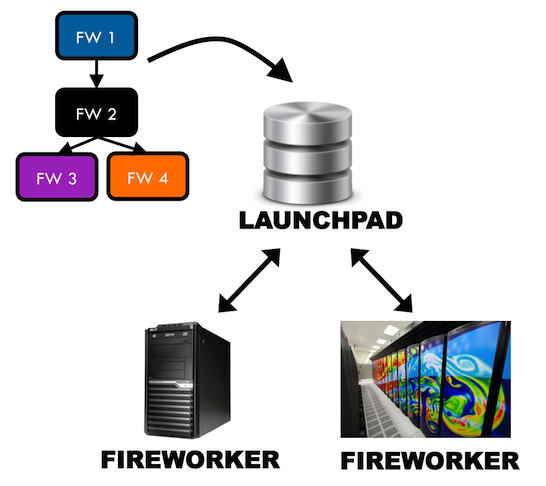
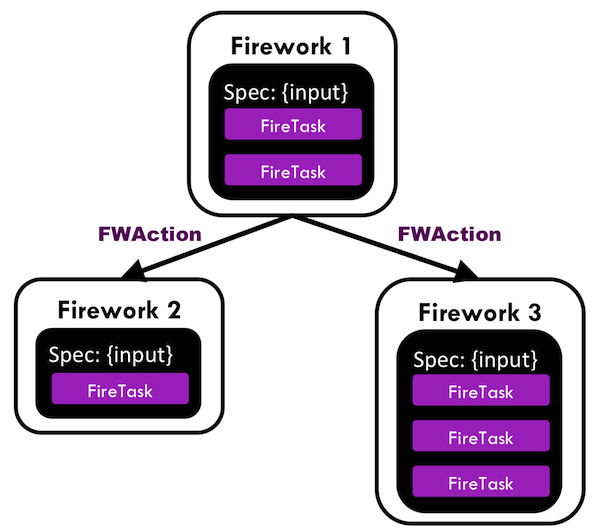

“Give me six hours to chop down a tree and I will spend the first four sharpening the axe.”- Abraham Lincoln
FireWorks is a free, open-source code for defining, managing, and executing workflows. Complex workflows can be defined using Python, JSON, or YAML, are stored using MongoDB, and can be monitored through a built-in web interface. Workflow execution can be automated over arbitrary computing resources, including those that have a queueing system. FireWorks has been used to run millions of workflows encompassing tens of millions of CPU-hours across diverse application areas and in long-term production projects over the span of multiple years. An academic paper on FireWorks is also available. For details, see Citing FireWorks.
Some features that distinguish FireWorks are dynamic workflows, failure-detection routines, and built-in tools and execution modes for running high-throughput computations at large computing centers. A screenshot of the workflow monitoring interface is shown below:

Is FireWorks for me?¶
FireWorks is intended to be a friendly workflow software that is easy to get started with, but flexible enough to handle complicated use cases.
Some (but not all) of its features include:
- A clean and flexible Python API, a powerful command-line interface, and a built-in web service for monitoring workflows.
- A database backend (MongoDB) lets you add, remove, and search the status of workflows.
- Detect failed jobs (both soft and hard failures), and rerun them as needed.
- Multiple execution modes - directly on a multicore machines or through a queue, on a single machine or multiple machines. Assign priorities and where jobs run.
- Support for dynamic workflows - workflows that modify themselves or create new ones based on what happens during execution.
- Automatic duplicate handling at the sub-workflow level - skip duplicated portions between two workflows while still running unique sections
- Built-in tasks for creating templated inputs, running scripts, and copying files to remote machines
- Remotely track the status of output files during execution.
- Package many small jobs into a single large job (e.g., automatically run 100 serial workflows in parallel over 100 cores)
- Support for several queueing systems such as PBS/Torque, Sun Grid Engine, SLURM, and IBM LoadLeveler.
A bird’s eye view of FireWorks¶
While FireWorks provides many features, its basic operation is simple. You can run FireWorks on a single laptop or at a supercomputing center.
Centralized Server and Worker Model¶
There are essentially just two components of a FireWorks installation:
- A server (“LaunchPad”) that manages workflows. You can add workflows (a DAG of “FireWorks”) to the LaunchPad, query for the state of your workflows, or rerun workflows. The workflows can be a straightforward series of scripts or dynamically adapt depending on the results obtained.
- One or more workers (“FireWorkers”) that run your jobs. The FireWorkers request workflows from the LaunchPad, execute them, and send back information. The FireWorker can be as simple as the same workstation used to host the LaunchPad, or complicated like a national supercomputing center with a queueing system.
The basic infrastructure looks like this:
{kind=link}
The components are largely decoupled, which makes FireWorks easier to use. End users can add new workflows to the LaunchPad without worrying about the details of how and where the workflows will be run (unless they really want to tailor the details of job execution). This keeps the workflow specifications lightweight, tidy, and easy to learn and use (if you’ve ever seen lengthy XML-based specifications in other workflow software, you’ll notice the difference in FireWorks right away).
On the opposite end, administrators can configure worker computers without worrying about where workflows are coming from or what they look like (although you can assign jobs to certain resources if desired). Running on a heterogeneous set of worker computers is simple because essentially the same code is used internally by FireWorks for running on simple workstations or a large supercomputing center, submitting to a traditional or web-based queue system, or packing together many jobs into a single queue submission.
Workflow Model¶
Workflows in FireWorks are made up of three main components:
- A Firetask is an atomic computing job. It can call a single shell script or execute a single Python function that you define (either within FireWorks, or in an external package).
- A Firework contains the JSON spec that includes all the information needed to bootstrap your job. For example, the spec contains an array of Firetasks to execute in sequence. The spec also includes any input parameters to pass to your Firetasks. You can easily perform the same function over different input data by creating Fireworks with identical Firetasks but different input parameters in the spec. You can design your spec however you’d like, as long as it’s valid JSON. The JSON format used for Firework specs is extremely flexible, very easy to learn (Python users familiar with dicts and arrays essentially already know JSON), and immediately makes rich searches over the input data available to end users through MongoDB’s JSON document search capabilities.
- A Workflow is a set of FireWorks with dependencies between them. For example, you might need a parent Firework to finish and generate some output files before running two child FireWorks.
Between FireWorks, you can return a FWAction that can store data or modify the Workflow depending on the output (e.g., pass data to the next step, cancel the remaining parts of the Workflow, or even add new FireWorks that are defined within the object).
{kind=link}
The FireWorks tutorials and FW design tips explain how to connect these components to achieve the desired behavior.
Quickstart and Tutorials¶
Quickstart (“Wiggle your big toe”)¶
To get a first glimpse of FireWorks, we suggest that you follow our installation and quickstart tutorials.
Basic usage¶
After completing the quickstart, we suggest that you follow our core tutorials that cover the primary features of FireWorks. Depending on your application, you may not need to complete all the tutorials.
Designing workflows¶
Executing workflows on different types of computing resources¶
Managing jobs and deployment¶
This series of tutorials cover how to manage your jobs and deploy FireWorks in a production environment.
Job priority, cancellation, restart, and failure¶
Monitoring FireWorks¶
Deploying FireWorks in production¶
Additional features and topics¶
The built-in Firetasks¶
Misc¶
- Controlling the directory and Worker of execution
- “Packing” small jobs into larger ones with multi job launcher
- Handling Duplicates Automatically
- Running Tasks in the Background
- Running FireWorks in “offline” mode on firewalled systems
- Using Python to command FireWorks
- Writing Queue Adapters
- Updating values (e.g., directory paths) in the database
- Using FilePad for storing and retrieving files
Citing FireWorks¶
Citation helps support our development! Please cite your usage of FireWorks through the following manuscript, which provides details on the design and features of the FireWorks software:
Jain, A., Ong, S. P., Chen, W., Medasani, B., Qu, X., Kocher, M., Brafman, M., Petretto, G., Rignanese, G.-M., Hautier, G., Gunter, D., and Persson, K. A. (2015) FireWorks: a dynamic workflow system designed for high-throughput applications. Concurrency Computat.: Pract. Exper., 27: 5037–5059. doi: 10.1002/cpe.3505.
@article {CPE:CPE3505,
author = {Jain, Anubhav and Ong, Shyue Ping and Chen, Wei and Medasani, Bharat and Qu, Xiaohui and Kocher, Michael and Brafman, Miriam and Petretto, Guido and Rignanese, Gian-Marco and Hautier, Geoffroy and Gunter, Daniel and Persson, Kristin A.},
title = {FireWorks: a dynamic workflow system designed for high-throughput applications},
journal = {Concurrency and Computation: Practice and Experience},
volume = {27},
number = {17},
issn = {1532-0634},
url = {http://dx.doi.org/10.1002/cpe.3505},
doi = {10.1002/cpe.3505},
pages = {5037--5059},
keywords = {scientific workflows, high-throughput computing, fault-tolerant computing},
year = {2015},
note = {CPE-14-0307.R2},
}
Contributing / Contact / Bug Reports¶
Want to see something added or changed? There are many ways to make that a reality! Some ways to get involved are:
- Help us improve the documentation - tell us where you got ‘stuck’ and improve the install process for everyone.
- Let us know if you need support for a queueing system or certain features.
- Point us to areas of the code that are difficult to understand or use.
- Contribute code! If you are interested in this option, please see our contribution guidelines.
Please submit questions, issues / bug reports, and all other communication through the FireWorks Google Groups.
Make contributions through GitHub using our Contribution Guidelines.
The list of contributors to FireWorks can be found here.
Changelog¶
Comprehensive Documentation¶
Some comprehensive documentation is listed below (only for the brave!)